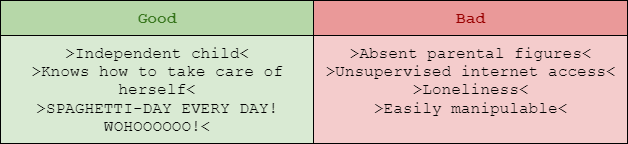

Apfel Project
Blume is 13 years old, she is very independent since her parents are not always at home due to work, that’s good and bad in a lot of aspects…

Yeah, I think that spaghetti-day every day counters everything bad in the list to be honest.
Next page ->